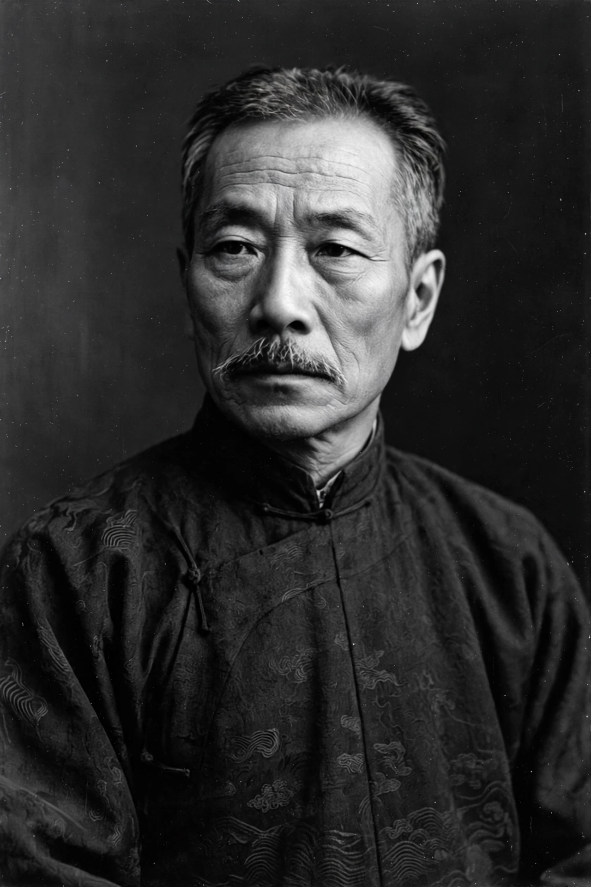

Lu Xun
From Wikipedia, the free encyclopedia
| Born | Zhou Shuren, 25 September 1881, Shaoxing, Zhejiang, Qing China |
|---|---|
| Died | 19 October 1936 (aged 55), Shanghai, China |
| Occupation | Writer, essayist, translator, critic |
| Notable works | Diary of a Madman, The True Story of Ah Q, A Call to Arms |

Lu Xun (Chinese: 魯迅; 25 September 1881 – 19 October 1936), born Zhou Zhangshou and later renamed Zhou Shuren, was a Chinese writer, essayist, poet, and translator. A leading figure of modern Chinese literature and a central voice of the May Fourth Movement, he is widely considered the founder of modern Chinese literature, and his short stories — written in the vernacular baihua rather than classical Chinese — reshaped the nation's fiction.
Life and work
Born into a declining scholar-gentry family in Shaoxing, Lu Xun studied medicine in Sendai, Japan, where, by his famous account, watching a newsreel of a Chinese prisoner being executed by the Japanese while Chinese onlookers stood apathetic convinced him that healing the spirit mattered more than healing bodies. Returning to China, he worked as a teacher and in the Ministry of Education. His story "Diary of a Madman" (1918), published in New Youth, was the first major modern Chinese short story; "The True Story of Ah Q" (1921–22) created the archetypal "Ah Q spirit" of self-deceiving rationalization. His collections A Call to Arms (1923) and Wandering (1926), his prose-poem collection Wild Grass, and his memoir Dawn Blossoms Plucked at Dusk are canonical.
In Shanghai in the 1930s he co-founded the League of Left-Wing Writers, championed woodcut art, and wrote the biting short essays (zawen) for which he is equally famous. Mao Zedong later praised him as "the chief commander of China's cultural revolution".